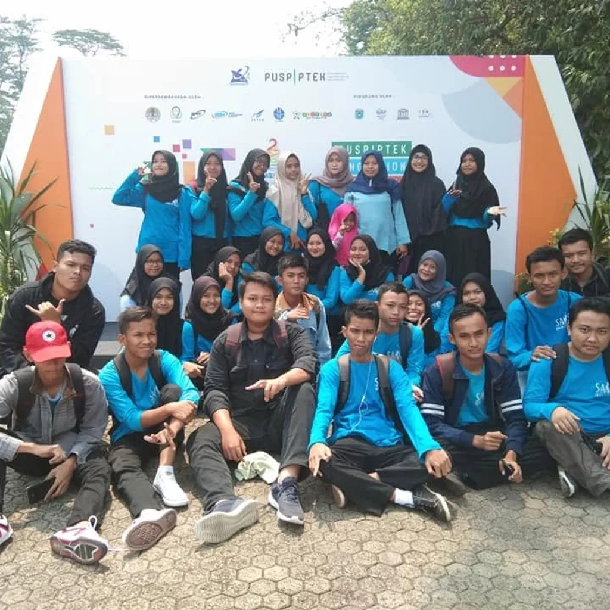
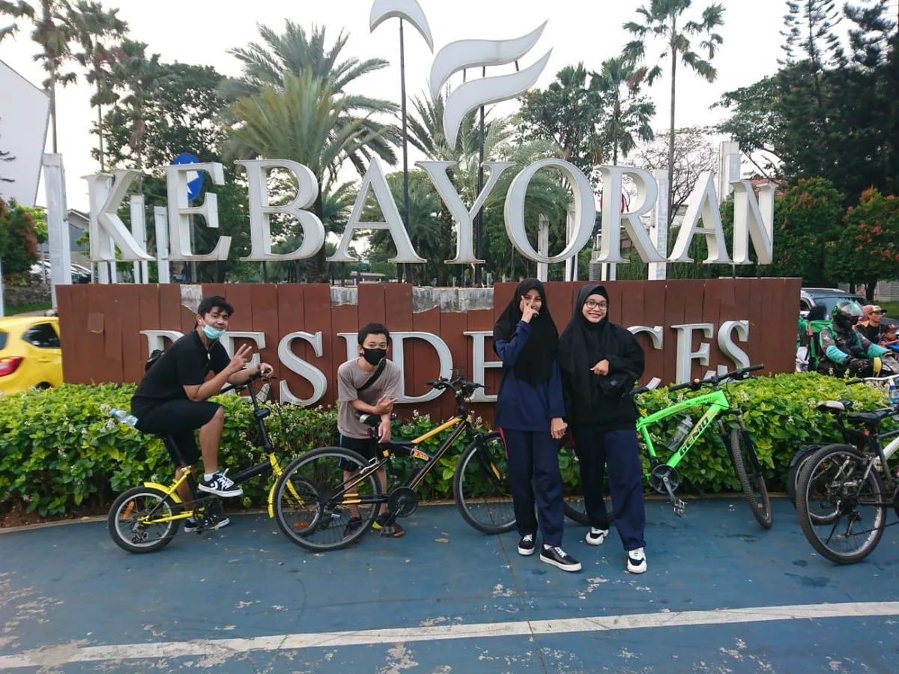
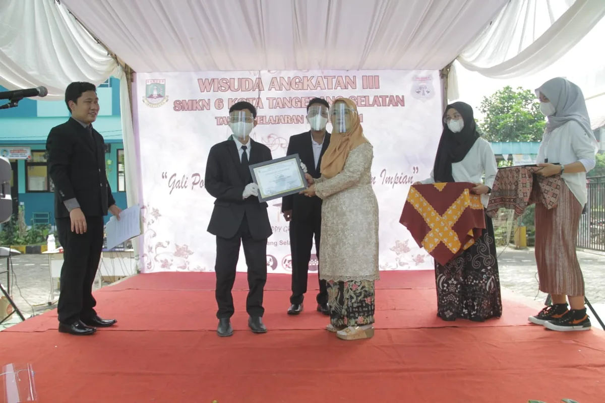
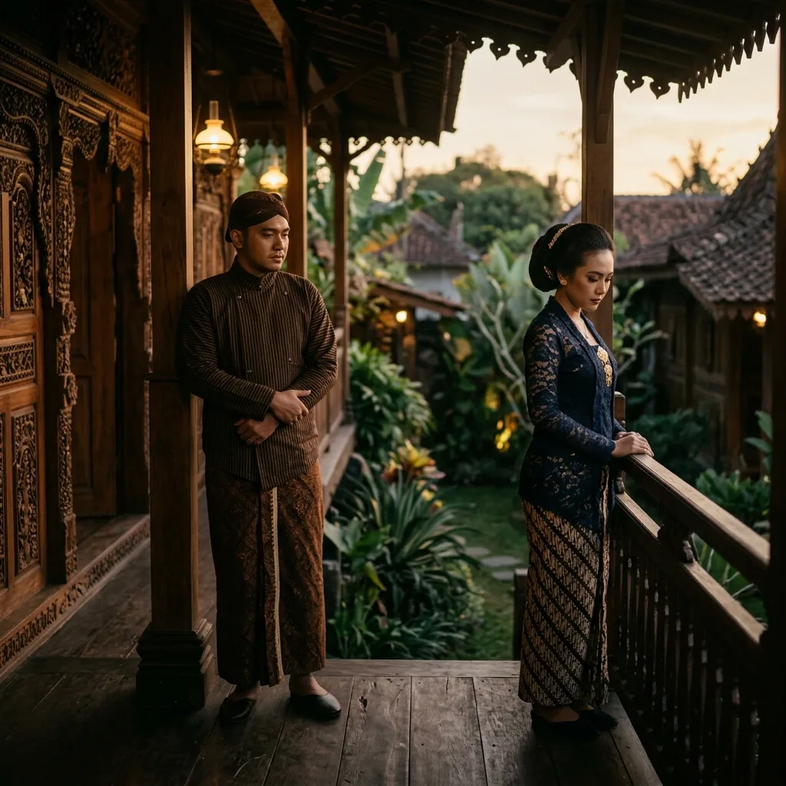
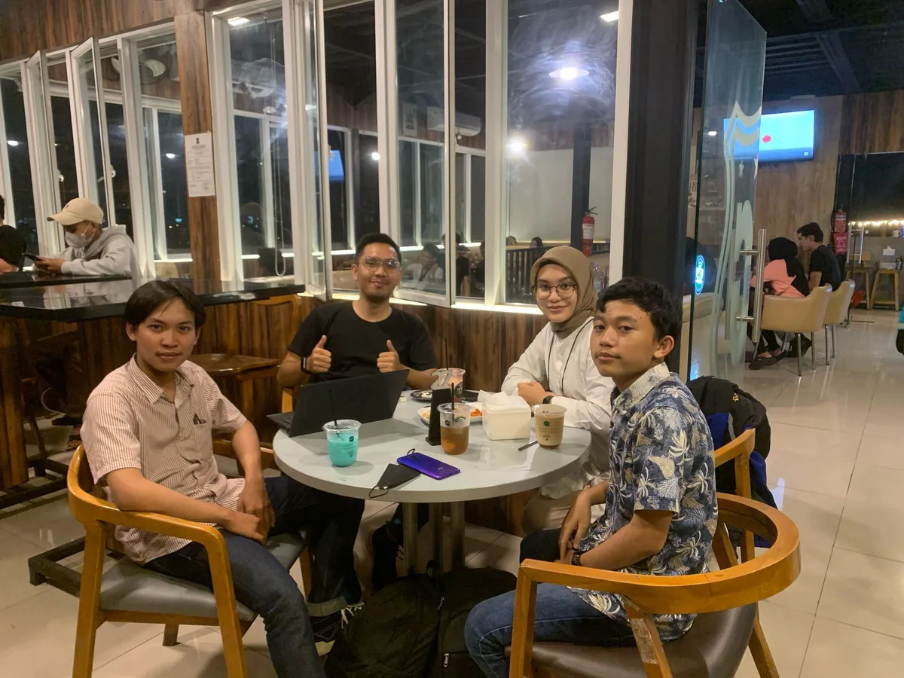
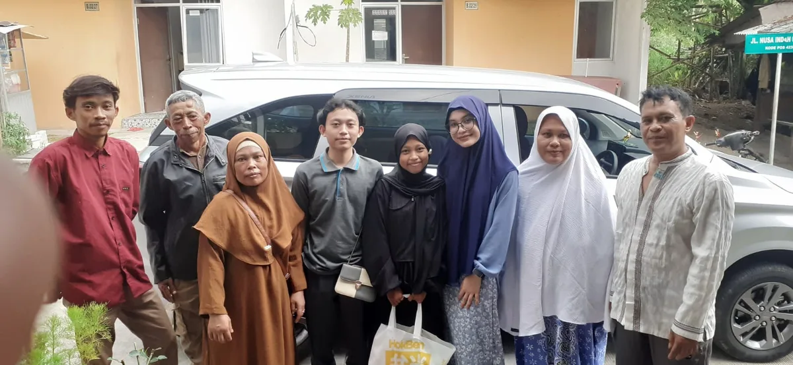
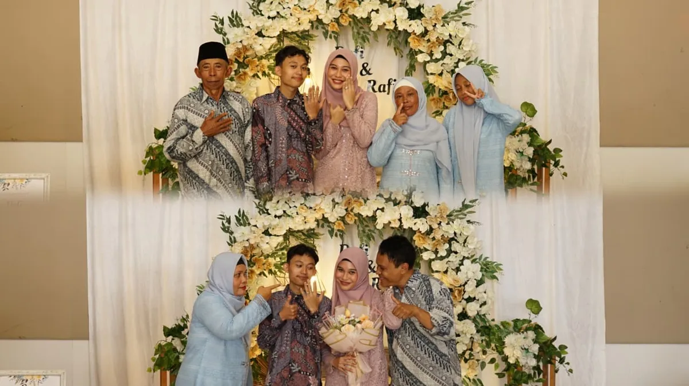
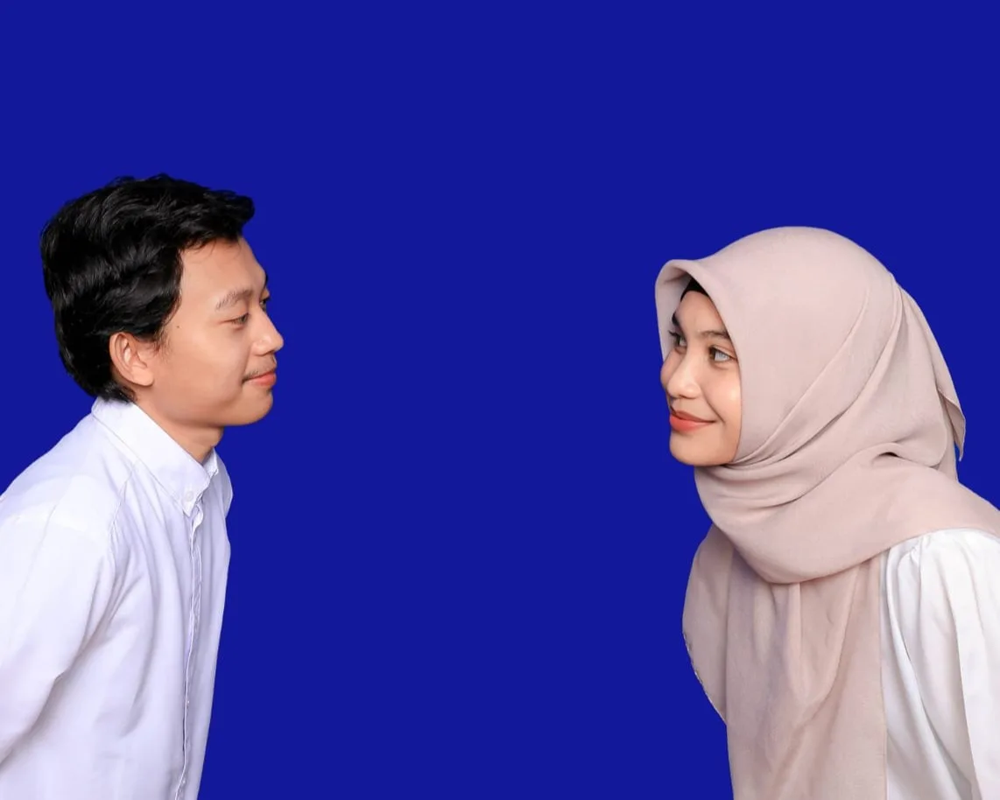

Kisah Kita

2019
Kisah kami dimulai di bangku SMK. Sebagai kakak dan adik kelas dalam jurusan yang sama, kami dipertemukan melalui kegiatan ekstrakurikuler Sains. Saat itu, kami hanyalah dua orang yang memiliki minat belajar yang sama.

2020
Percakapan kami mulai menjadi lebih intens. Awalnya hanya seputar tugas sekolah, materi pelajaran, dan kegiatan ekstrakurikuler. Namun tanpa disadari, dari obrolan sederhana itu tumbuh rasa nyaman untuk saling berbagi cerita dan bertukar pikiran.

2021
Meski telah lulus sekolah, hubungan kami tetap terjalin dengan baik. Jarak dan kesibukan tidak menghentikan komunikasi yang semakin dewasa. Kami menjadi tempat untuk saling mendengar, mendukung, dan berbagi sudut pandang tentang banyak hal.

2022
Perjalanan kami tidak selalu berjalan mulus. Tahun ini menjadi salah satu fase yang cukup berat sehingga komunikasi yang dulu begitu intens perlahan merenggang. Kami hanya saling mengikuti kabar melalui media sosial, menjalani jalan hidup masing-masing, sembari memperbaiki diri.

2023
Takdir kembali mempertemukan kami dengan versi terbaik kami. Dengan dukungan orang-orang terdekat, kami mulai berkomunikasi kembali. Dari sekadar bertukar kabar, kami kembali menemukan kenyamanan yang pernah ada dan menyadari bahwa cerita kami ternyata belum berakhir.

2024
Menariknya, kami tidak pernah memiliki tanggal jadian ataupun momen pengungkapan perasaan yang resmi. Namun setelah pertemuan kedua keluarga sembari meminta restu kepada kedua orang tua, kami justru melangkah lebih jauh dengan membicarakan masa depan dan menentukan tanggal lamaran.

2025
Lamaran menjadi awal dari komitmen yang lebih besar. Dengan kesiapan dan keyakinan yang matang, kami mulai menyusun langkah demi langkah menuju kehidupan baru yang kami impikan bersama.

2026
Menjelang hari pernikahan, berbagai tantangan datang silih berganti. Namun setiap rintangan justru menguatkan keyakinan kami untuk tetap berjalan berdampingan. Dengan penuh syukur dan do'a, kami memilih untuk mengikat janji suci dalam pernikahan, membuka lembaran baru, dan memulai kisah yang sesungguhnya sebagai pasangan seumur hidup.
"Bukan tentang seberapa cepat kami sampai, tetapi tentang bagaimana kami tetap memilih satu sama lain di setiap perjalanan." - Dofina